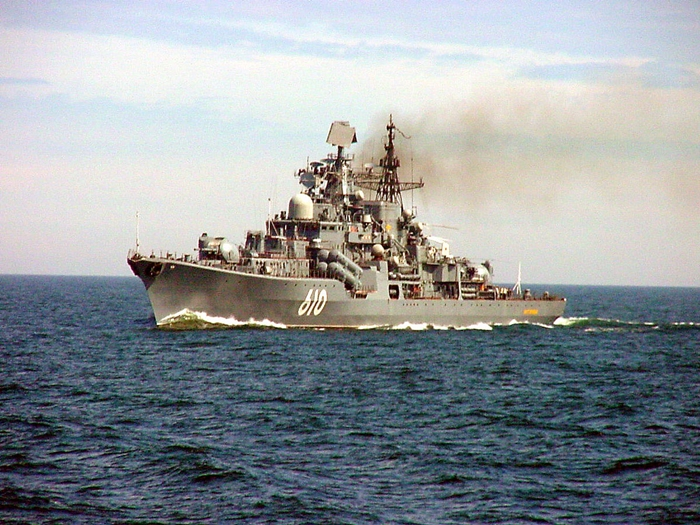

Настойчивый
Эскадренный миноносец, флагман Балтийского флота. Назначение: уничтожение наземных целей,
объектов ПВО, техники и живой силы противника. Может выполнять огневую поддержку десанта на
месте высадки, транспорта и десантных кораблей. Уничтожать надводные корабли, средств для
высадки десанта противника. Может патрулировать и нести боевую службу вместе с прочими
силами фронта.
Содержание
Конструкция
- Длина: 156,5 м. (наибольшая)
- Ширина: 17,2 м.
- Осадка: 8,2 м.
- Водоизмещение стандартное: 6 600 тонн.
- Водоизмещение полное: 8 000 тонн.
- Скорость: 33,4 узла (62 км/час).
- Автономность плавания — 30 суток.
- Экипаж крейсера — 296 человек (в том числе 25 офицеров(в мирное время)); 344—358 человек (в том числе 31 офицер(в военное время)).
- Length: 156,5 m. (largest)
- Width: 17,2 m.
- Draft: 8,2 m.
- Standard displacement: 6 600 tons.
- Full displacement: 8 000 tons.
- Speed: 33,4 knots (62 km/h).
- The autonomy of navigation is 30 days.
- The crew of the cruiser is 296 people (including 25 officers (in peacetime)); 344-358 people (including 31 officers (in wartime))
История создания
Эскадренный миноносец «Настойчивый» заложен 7 апреля 1988 года на заводе № 190 имени А.
А. Жданова в Санкт-Петербурге (строительный № 876), спущен на воду 19 января 1991 года.
Экипаж корабля сформирован 15 февраля 1992 года, заселение экипажа на корабль произошло 29 августа.
30 декабря 1992 года корабль принят в боевой состав Балтийского флота ВМФ России.
27 марта 1993 года на корабле был поднят Военно-морской флаг России.
На период строительства корабль был включён в состав 13-й бригады строящихся и ремонтирующихся кораблей (13 брстремк) Ленинградской военно-морской базы, на период испытаний включён в состав 76-й бригады ракетных кораблей 12-й дивизии ракетных кораблей, затем был переведён в состав 128-й бригады надводных кораблей (Балтийск) 12-й дивизии надводных кораблей.
Экипаж корабля сформирован 15 февраля 1992 года, заселение экипажа на корабль произошло 29 августа.
30 декабря 1992 года корабль принят в боевой состав Балтийского флота ВМФ России.
27 марта 1993 года на корабле был поднят Военно-морской флаг России.
На период строительства корабль был включён в состав 13-й бригады строящихся и ремонтирующихся кораблей (13 брстремк) Ленинградской военно-морской базы, на период испытаний включён в состав 76-й бригады ракетных кораблей 12-й дивизии ракетных кораблей, затем был переведён в состав 128-й бригады надводных кораблей (Балтийск) 12-й дивизии надводных кораблей.
The destroyer Insistent was laid down on April 7, 1988 at the plant No. 190 named after
A. A. Zhdanov in St. Petersburg (construction No. 876), launched on January 19, 1991.
The crew of the ship was formed on February 15, 1992, the crew settled on the ship on August 29.
On December 30, 1992, the ship was accepted into the combat structure of the Baltic Fleet of the Russian Navy.
On March 27, 1993, the Naval Flag of Russia was raised on the ship.
For the period of construction, the ship was included in the 13th brigade of ships under construction and under repair (13 DBK) of the Leningrad Naval Base, for the period of testing it was included in the 76th brigade of missile ships of the 12th division of missile ships, then it was transferred to the 128th brigade of surface ships (Baltiysk) of the 12th division of surface ships.
The crew of the ship was formed on February 15, 1992, the crew settled on the ship on August 29.
On December 30, 1992, the ship was accepted into the combat structure of the Baltic Fleet of the Russian Navy.
On March 27, 1993, the Naval Flag of Russia was raised on the ship.
For the period of construction, the ship was included in the 13th brigade of ships under construction and under repair (13 DBK) of the Leningrad Naval Base, for the period of testing it was included in the 76th brigade of missile ships of the 12th division of missile ships, then it was transferred to the 128th brigade of surface ships (Baltiysk) of the 12th division of surface ships.